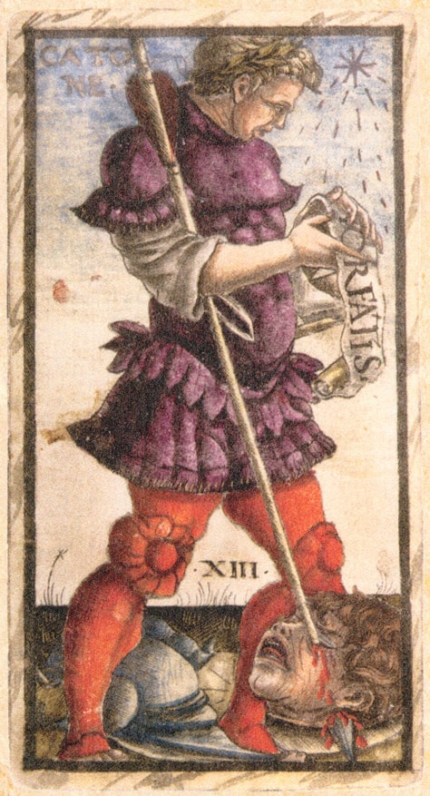
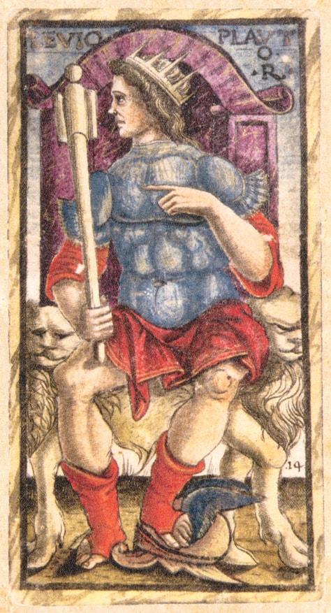

Faça sua tiragem
Embaralhe, tire uma carta (uma pergunta rápida) ou três (passado · presente · futuro) e descubra o sentido direto ou invertido de cada uma.
Clique em Embaralhar e tirar para começar.
As 78 cartas
Clique em qualquer carta para ler o significado completo — sentido direto e invertido.
Nenhuma carta encontrada para esta busca.


Sobre o Sola Busca
O Tarot Sola Busca foi gravado em metal no final do século XV, na Itália — provavelmente em Veneza, por volta de 1491. É o mais antigo baralho de tarô de 78 cartas inteiramente ilustrado que chegou até nós: os 22 arcanos maiores, mas também todas as 56 cartas de figura com símbolos numerados, quase uma inovação absoluta para a época.
Cada carta traz figuras da história, da mitologia e do mundo bíblico gravadas com fio preciso — de Mato (o Louco) a Nabucho-denasor (o Mundo). O baralho completo pintado à mão está hoje no Museu Brera, em Milão; fotografias dele foram doadas ao Museu Britânico em 1907, e muitos estudiosos acreditam que foram elas que inspiraram o tarô Rider-Waite.
As imagens deste site são fotografias em domínio público (via Wikimedia Commons); os significados foram escritos em português para este app.